宿舍·凌晨2:17
大壮的鼾声像定时器一样精准——每隔八秒一次。我数了整整一百二十三次。
窗外月光透过铁栏杆投下格子状的阴影。我坐在下铺边缘，深吸一口气，默念——
Hack.OS，启动「网络预言」。
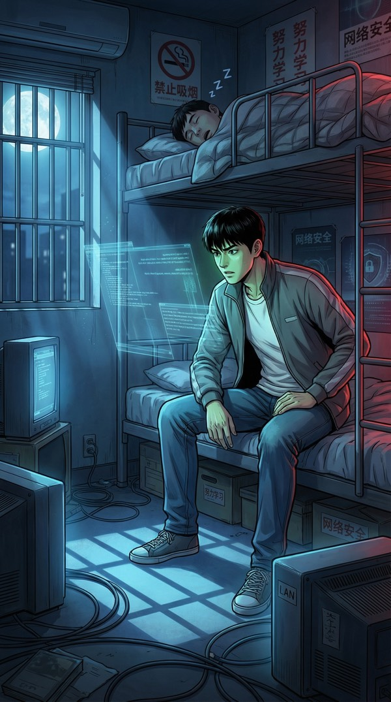
大壮的鼾声像定时器一样精准——每隔八秒一次。我数了整整一百二十三次。
窗外月光透过铁栏杆投下格子状的阴影。我坐在下铺边缘，深吸一口气，默念——
Hack.OS，启动「网络预言」。
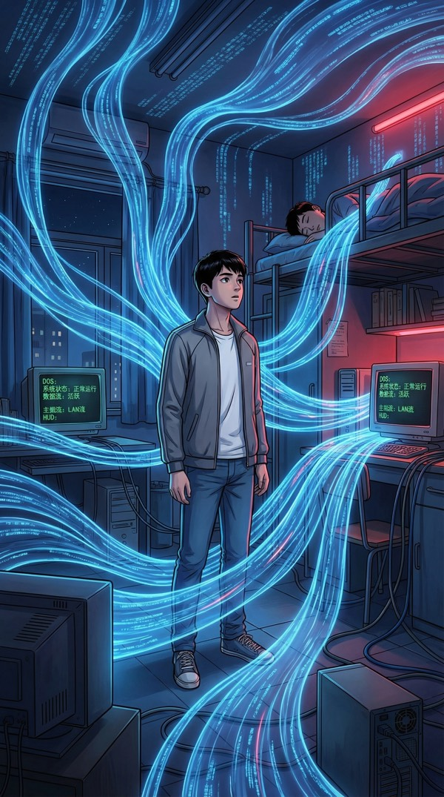
世界变了。
空气中突然浮现出无数半透明的蓝色光线——像毛细血管一样细密，又像河流一样有方向。它们穿墙而过、穿过天花板、穿过大壮打鼾的身体。
这就是校园网的数据流。每一条光线都是一个数据包的轨迹。而我——能看到它们未来三十秒的走向。
> 视野范围: 半径200米
> 预测窗口: 30秒
> 数据流可视化: 蓝色=正常 | 黄色=异常 | 红色=威胁
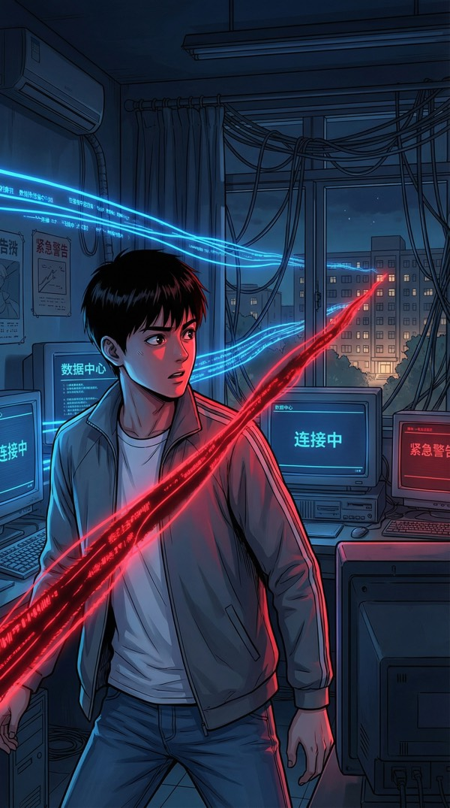
大部分数据流是宁静的蓝色——半夜还在下载的室友、BBS上的夜猫子水帖、几条QQ消息……
然后我看到了那条红线。
粗壮的、脉动的、像一条愤怒的蟒蛇——从3号教学楼方向涌出，笔直刺向校外。
它的流量是正常数据的二十倍。颜色不是黄色"异常"，而是刺眼的红色"威胁"。
有人正在往校外大量传输数据。凌晨两点。从赵教授的实验楼。
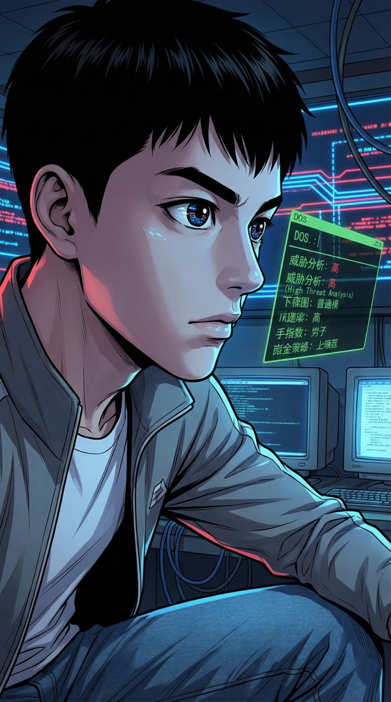
> 来源: 3号教学楼·网络安全实验室
> 目标: 境外IP 203.XXX.XXX.XX (新加坡跳板)
> 内容: 加密数据包·高度压缩
> 预测: 30秒后流量将增加300%——正在进行批量传输
上周发现的数据窃取，不是一次性事件。它是一个持续运行的系统。
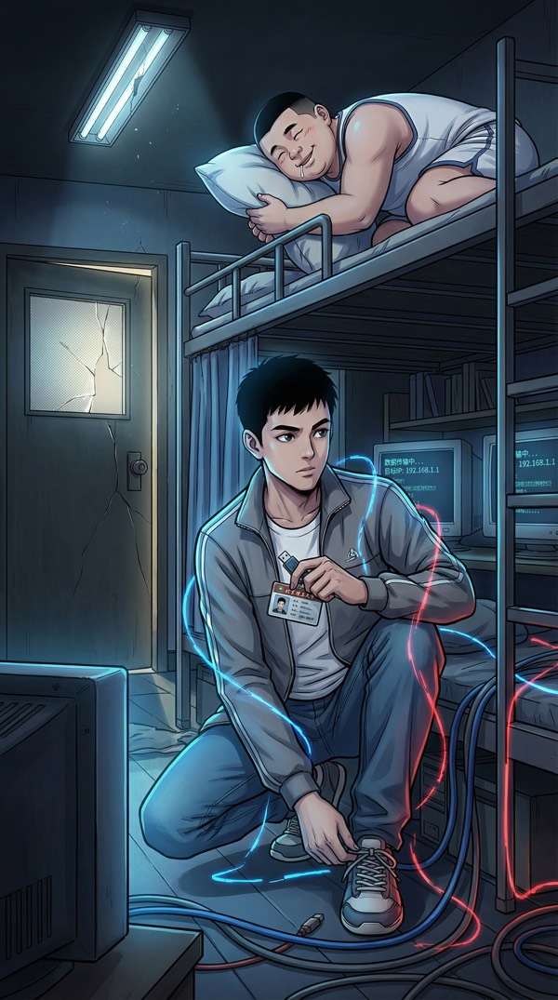
我站起来，尽量不发出声响地穿上运动鞋。
"嗯……红烧肉……再来一份……"
哪怕在梦里，大壮的世界也只有食堂。
我拿起桌上的校园卡和一个U盘，轻轻拉开宿舍门。走廊的灯坏了一半，忽明忽暗。
一个人去。不带大壮。这件事太危险了——他不是黑客，他是后勤保障。
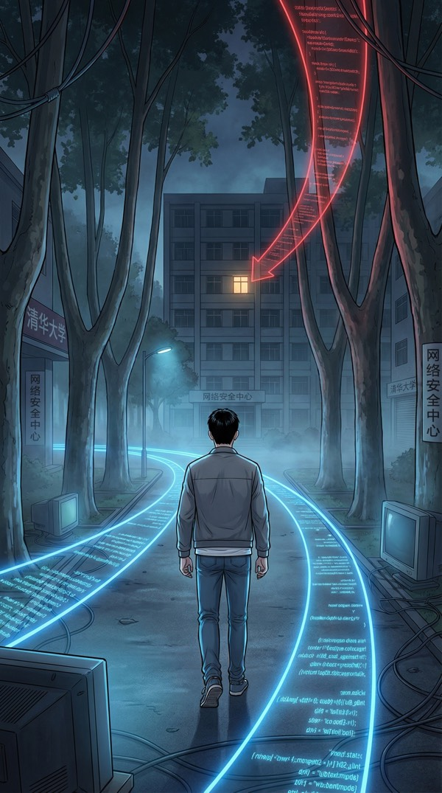
九月末的上海，凌晨的空气潮湿而闷热。校园里静得只剩蝉鸣和远处变电箱的嗡嗡声。
我沿着数据流的方向走。那条红色的"蟒蛇"悬在半空中，穿过梧桐树的枝叶，笔直指向3号教学楼。
楼里只有四楼有一间灯亮着。
赵教授的网络安全实验室。
> 不要直接进入。先在外围观察。
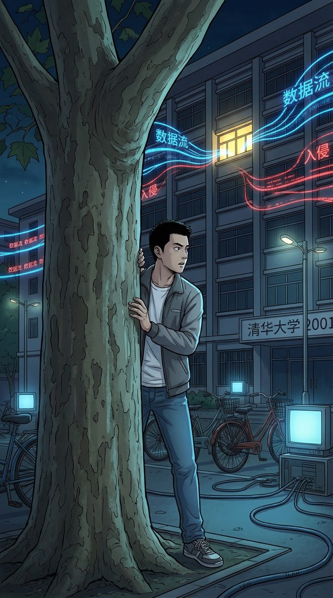
我没有冲进去。
站在楼外的大梧桐树后面，我启动了「网络预言」的全视野模式。四楼实验室的内部数据流一览无余——
红色数据流从一台特定的终端涌出。同时，旁边还有几条黄色的"异常"流——有人在同一时间访问校园教务系统的数据库。
不只是窃取研究数据。他们还在偷学生个人信息。
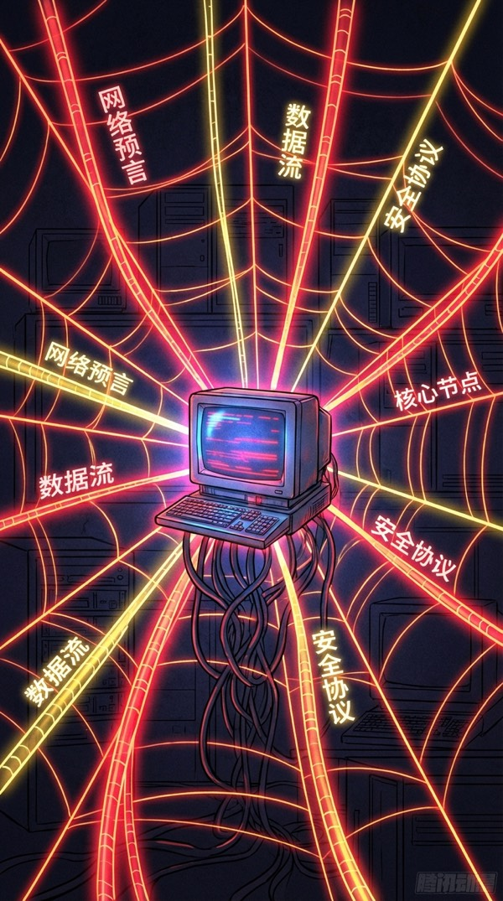
> 终端识别: 实验室7号机
> 当前操作者: 远程控制（非本地操作）
> 控制源: 校内VPN → 宿舍区2号楼
> 程序: 自动化脚本·定时2:00启动·每天执行
2号楼。那是大四学生和研究生的宿舍。
陈锋——那个灰色卫衣男——住在2号楼。
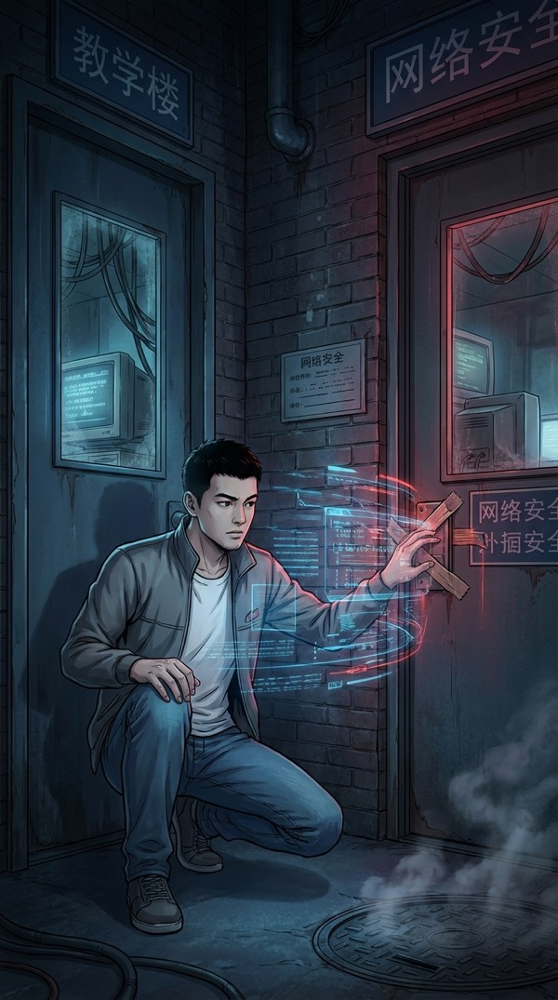
我绕到教学楼侧门——门锁已经被人撬过，用一截透明胶带贴住了锁舌。
有人经常从这里进出。
我没有进去。相反，我做了一个更聪明的事——
利用「网络预言」，我追踪那条红色数据流的完整路径：实验室终端→校园网核心交换机→出口路由器→境外。
在核心交换机那一层，我发现了一个精心隐藏的分流器——
> 检测到: 镜像端口 (SPAN)
> 功能: 复制所有通过核心交换机的数据
> 安装时间: 约2周前
> 影响范围: 全校所有网络流量
这不是简单的偷数据。有人在整个校园网上装了一面"镜子"。所有人的所有数据——邮件、聊天记录、作业、研究文件——都被复制了一份。
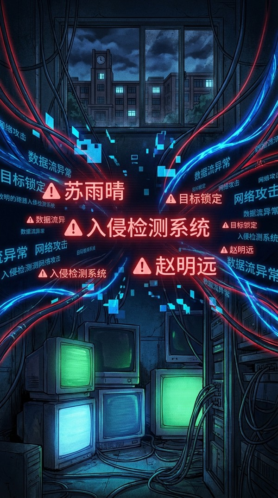
然后我看到了一个让我血液凝固的细节。
在被窃取的数据中，有一组查询频率极高的关键词——
苏雨晴。被人盯上了。而且不是一般的关注——327次定向查询。
有人在系统性地监控她。她的邮件、她的文件、她的聊天记录、她在实验室的每一步操作。
> 苏雨晴正在协助赵教授开发中国第一代入侵检测系统(IDS)。
> 这个项目如果成功，将威胁到所有依赖网络漏洞的灰色产业。
> 有人想在它成功之前——摧毁它。
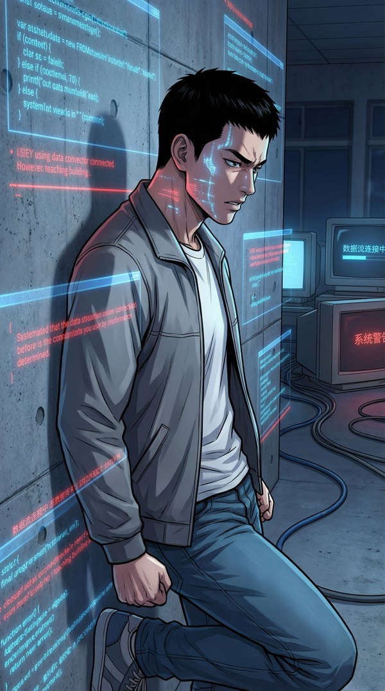
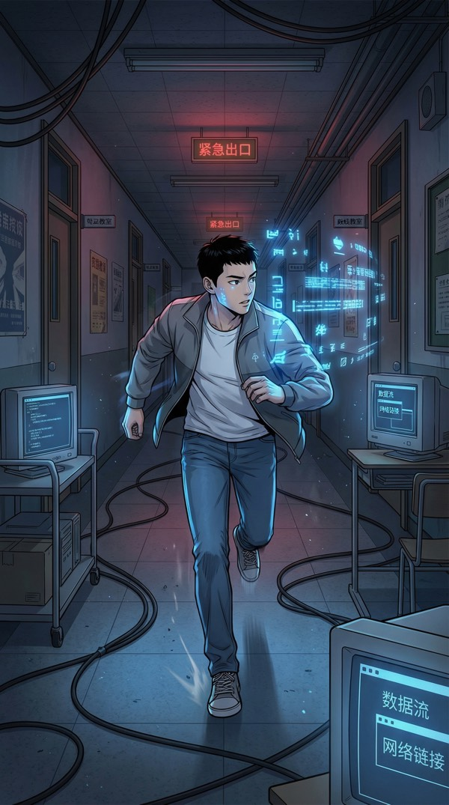
我决定冒一次险。
侧门进入，沿着楼梯上到三楼——不是四楼。四楼有摄像头（虽然2001年的摄像头像素约等于马赛克）。三楼的网络配线间没有锁。
推开配线间的门，里面堆满了灰尘和线缆。一台校园网的汇聚交换机在角落里嗡嗡运转，指示灯疯狂闪烁。
不需要进实验室。我只需要接近核心交换机，就能抓取更多数据流的细节。
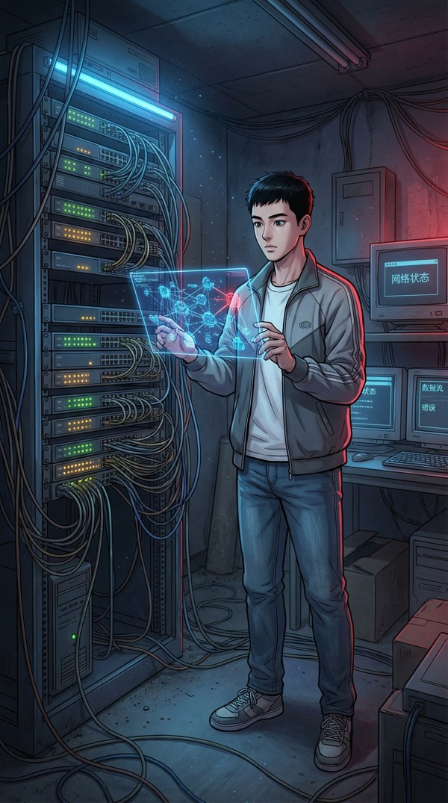
距离核心交换机不到十米。「网络预言」的精度飙升。
我看到了完整的拓扑——
硬件嗅探器。不是软件入侵——有人在物理层面动了手脚。这意味着此人有进出核心机房的权限。
学生没有核心机房的钥匙。只有教职工或网络中心的工作人员才有。
陈锋背后还有人。
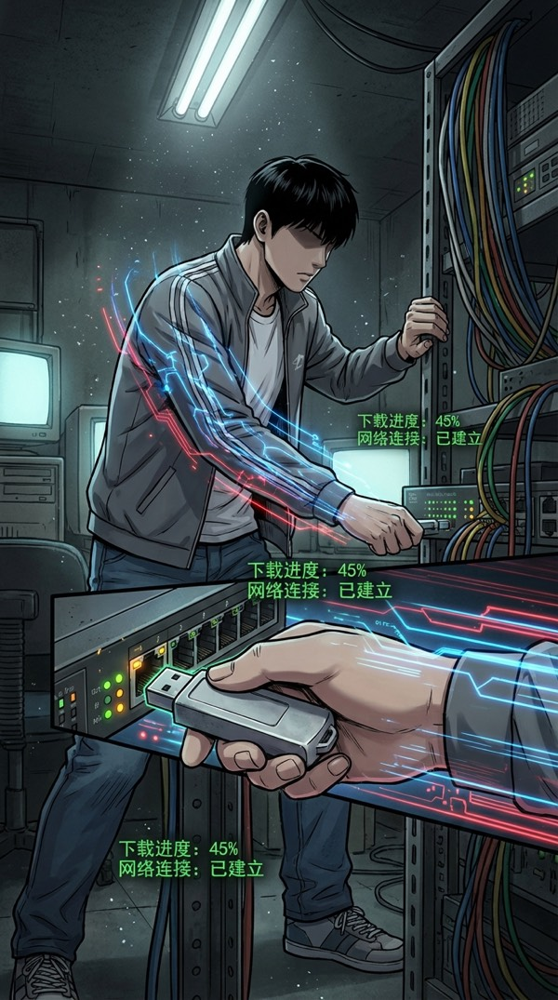
我掏出U盘，插入配线间的一个备用端口。利用Hack.OS的辅助，我在两分钟内抓取了过去一周的数据流日志——加密的，但我能看到元数据。
> 已保存: 7天完整流量元数据
> 已标记: 23次异常传输记录
> 已记录: 控制源IP变化轨迹
> 证据完整度: 68% — 缺少操作者的直接关联证据
拔出U盘，原路返回。整个过程不到十五分钟。
离开教学楼时，我回头看了一眼四楼——灯已经灭了。自动脚本执行完毕，一切回归平静。
明天凌晨两点，它还会再次启动。我有二十四小时的准备时间。
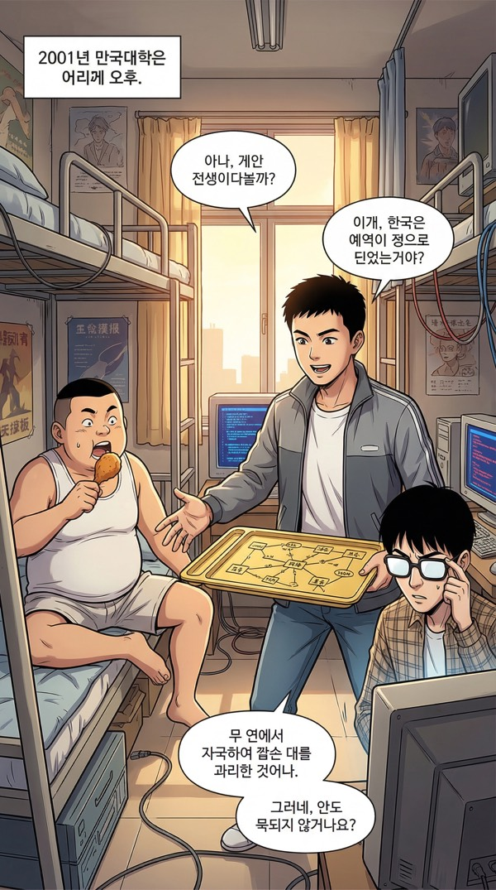
"我需要你们帮忙。"
大壮停下了啃鸡腿的动作。眼镜（李文博）推了推他那副厚得能防弹的黑框眼镜。
我在从食堂顺来的塑料托盘上画出了简化版的网络拓扑图——把凌晨的发现用他们能理解的语言讲了一遍。
"有人偷全校学生信息？这不是犯法吗？报警啊！"
"2001年。中国还没有《网络安全法》。报警了警察也不知道怎么查。我们得自己收集证据。"
"你想做什么？"
"蜜罐。"
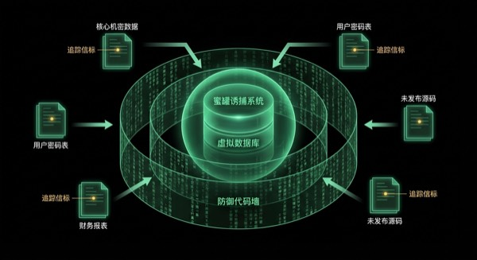
> 蜜罐（Honeypot）:
> 一个伪装成高价值目标的陷阱系统。
> 看起来像真正的数据库，
> 实际上是一个精心设计的"捕鼠器"。
> 谁碰了它，就会暴露自己的真实身份。
计划很简单：在实验室的网络中放一个假的"IDS核心代码库"。里面全是精心伪造的诱饵数据。对方一旦尝试窃取，我就能拿到他的真实IP、操作时间、甚至操作习惯。
证据完整度从68%提升到100%。然后——一击必中。
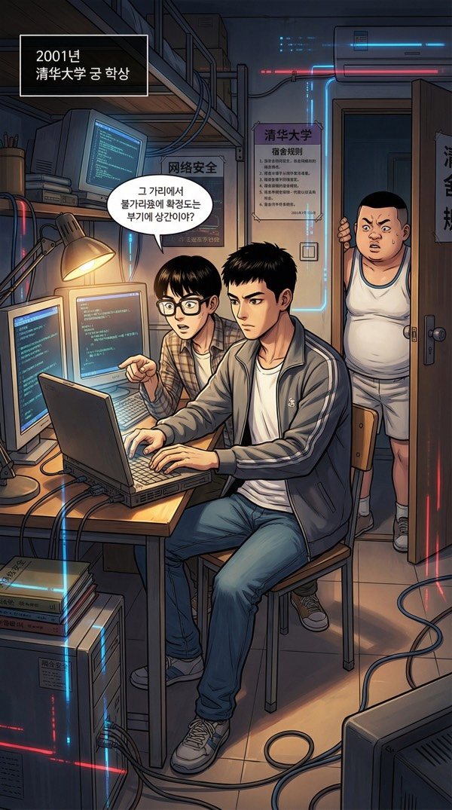
分工明确——
我负责蜜罐核心：伪造一个看起来极其真实的"IDS源代码仓库"，里面混入追踪信标。
眼镜负责追踪模块：一旦诱饵文件被打开，追踪信标会通过三层加密隧道回传操作者的硬件指纹。
大壮的任务——
"我干什么？"
"你负责最重要的事——今晚帮我们把蜜罐部署到实验室。你的借口是去取之前落在实验室的水杯。"
"可是我没有水杯落在实验室——"
"现在有了。"我把一个写着"大壮的杯子请勿动"的塑料杯塞给他。
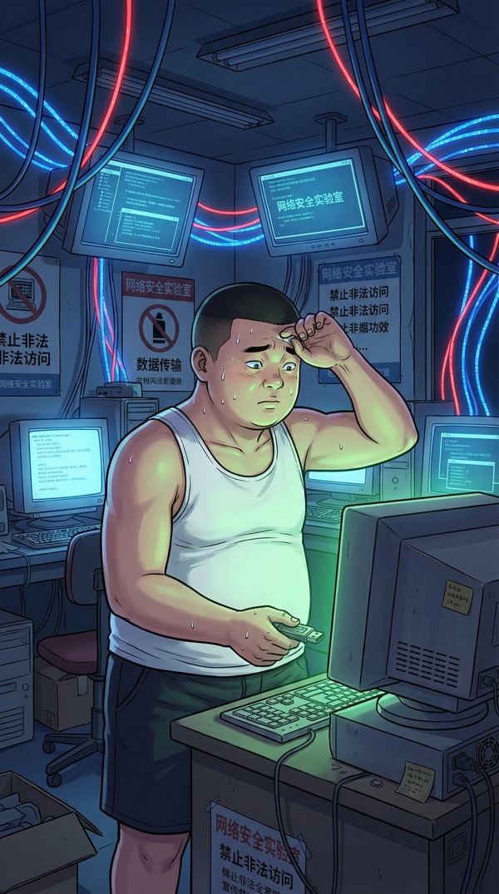
大壮进去了。我和眼镜在楼下的灌木丛里蹲着，通过对讲机（借的校广播站的）保持联系。
"插上了……U盘在运行……这破电脑怎么这么慢啊！"
"别慌，正常的。等绿灯亮了就拔出来。"
"绿灯亮了！我拔了——等等，我好像碰到了什么……屏幕弹出了一个窗口——"
我的心跳骤然加速。
"什么窗口？念给我听！"
"呃……'警告：未授权访问已被记录。您的MAC地址已被捕获。'——这啥意思？"
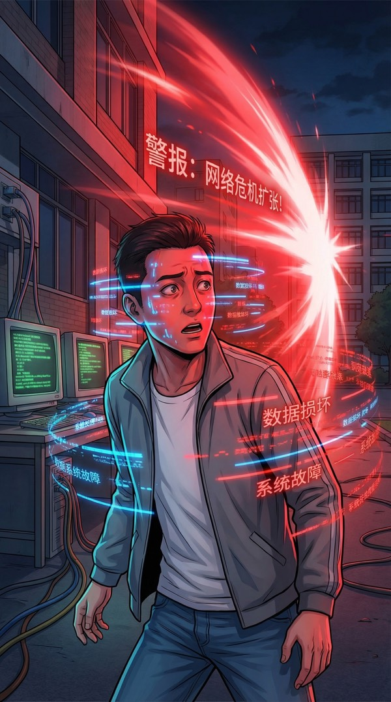
我脸色剧变。
对方在实验室里也设了蜜罐——反蜜罐！大壮触发了他的警报系统！
> [Hack.OS] 紧急警告
> 对方蜜罐已触发
> 大壮的MAC地址已被记录
> 预测: 15秒后对方将远程登入检查
> 25秒后对方可能发起反向追踪
> 建议: 立即撤离 + 清除痕迹
"大壮！现在立刻拔掉所有东西，离开实验室！从侧门走！跑！"
"啊？发生什——"
"别问！跑！"
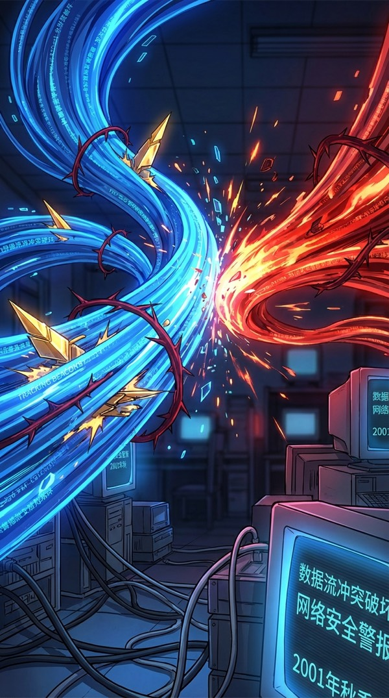
但在大壮撤离的同时——我的蜜罐也已经部署成功了。
两个蜜罐同时存在于同一个网络中。我的在钓他，他的蜜罐抓到了大壮。
而此刻，在数据流的世界里，一场无声的战争正在爆发——
我的追踪信标开始回传数据。对方的反追踪程序试图拦截。两股数据流在校园网的核心节点疯狂碰撞——蓝色和红色的光线缠绕、撕扯、吞噬……
> 我方信标: 已成功植入·正在回传
> 对方反追踪: 尝试定位信标源头
> 对抗强度: 高
> 预测: 18秒后对方将切断所有连接
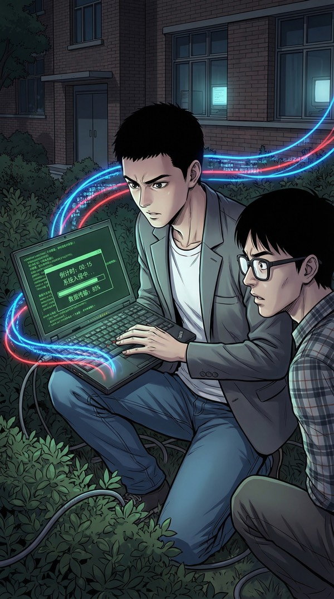
我掏出了那台借来的ThinkPad——2001年的二手货，键盘咔哒作响得像打字机。
十八秒。我需要在对方切断连接之前，把追踪信标的回传数据全部下载。
手指飞舞。25年的键盘肌肉记忆全开。
"拿到了？"
"拿到了。"
然后——校园网断了。整个校园一瞬间回到了没有网络的状态。对方直接切断了核心交换机的连接。宁可断网，也不让我继续追踪。
远处宿舍楼传来此起彼伏的怒吼："网断了！谁TM断的网！""我QQ聊天记录没了！"
回到宿舍，三个人围在那台ThinkPad前面。大壮还在发抖。眼镜已经开始分析数据。
我打开信标回传的文件——
陈锋。果然是他。
但最后两行信息让我的手指僵在键盘上。
网络信息中心……管理员权限……
陈锋一个大四学生，怎么可能有管理员权限？除非——
"朱江。你看这个节点注册人。名字被加密了，但是……设备型号是IBM ThinkPad T23。全校只有行政人员才配这个型号。"
"你想说什么？"
"我想说——陈锋可能只是前台。后面那个人……可能是学校内部的人。有行政权限的人。"
宿舍里沉默了整整十秒。
"那……那我们还查吗？"
我盯着屏幕上那个被加密的名字。
> 证据完整度已更新: 83%
> 剩余缺失: 幕后操作者身份
> 风险评估: 极高——对方可能有权限直接查到你们
我关上笔记本电脑的屏幕。窗外，天边已经泛起了鱼肚白。
十二小时。
在对方找到我们之前——我必须先找到他。